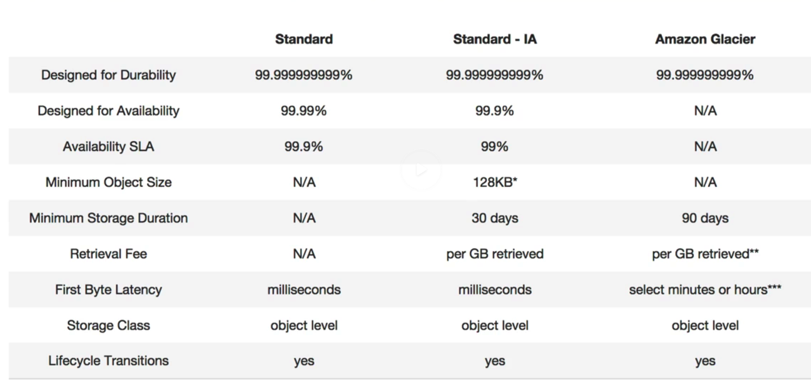

What is S3?
S3 provides developers and IT teams with secure, durable, highly-scalable object storage. Amazon S3 is easy to use, with a simple web services interface to store and retrieve any amount of data from anywhere on the web
S3 is a safe place to store your files. It is Object based storage(Flat Files such as documents, pdfs, videos, etc). The data is spread across multiple devies and facilities. Designed to withstand failures
S3 - The Basics
- S3 is Object based i.e. allows you to upload files
- Files can be from 0 Bytes to 5TB.
- There is unlimited storage
- Files are stored in Buckets (Think of a folder)
- S3 is a universal namespace, that is, Bucket names must be unique globally
- When you create a bucket, it creates a unique dns address (https://s3-region-name.amazonaws.com/nameOfBucket
- When you upload a file to S3 you will receive a HTTP 200 code if the upload was successful
- Built for 99.99% availability for the S3 platform
- Amazon Guarantee 99.9% availability
- Amazon guarantees 99.999999999% durability for S3 information. (11 9's)
- Tiered Storage Available
- LifeCycle Management
- Versioning
- Encryption
- Secure your data using Access Control Lists and Bucket Policies
Data Consistency Model For S3
- Read after Write consistency for PUTS of new Objects (brand new upload of files can be read almost immediately)
- Eventual Consistency for overwrite PUTS and DELETES (when you update a file or delete a file, it can take some time for the changes to propagate because it has to make the change across multiple devices and facilities) The data you get is considered "atomic". Either you get the old data or new data. Nothing in-between
S3 - S3 is a simple key, value store
- S3 is Object based. Objects consist of the following;
- Key (This is simply the name of the object/filename)
- Value (This is simple the data and is made up of a sequence of bytes/literally the data)
- Version ID (Important for versioning)
- Metadata (Data about the data you are storing)
- Subresources (Consist of two things: Access Control List, Torrent)
S3 - Storage Tiers/Classes

- S3 - 99.99% availability, 99.999999999% durability, stored redudantly across multiple facilities and is designed to sustain the loss of 2 facilities concurrently
- S3 - IA (Infrequently Accessed) For data that is accessed less frequently, but required rapid access when needed. Lower fee than S3, but you are charged a retrieval free
- RRS - Reduced Redundancy Storage - Designed to provide 99.99% durability and 99.99% availability of objects over a given year
- Glacier - Very cheap but used for archival only. It takes 3-5 hours to restore from Glacier
- Glacier is an extremely low-cost storage service for data archival. Amazon Glacier stores data for as little as $0.0.1 per gigabyte per month, and is optimized for data that is infrequently accessed and for which retrieval times of 3 to 5 hours are suitable

S3 - Charges
- Charged for;
- Storage
- Requests
- Storage Management Pricing
- Data Transfer Pricing (Into is free but moving data around in S3 is charged)
- Transfer Acceleration - enables fast, easy and secure transfers of files over long distances between your end users and an S3 bucket. Transfer Acceleration takes advantage of Amazon CloudFront's globally distributed edge locations. As the data arrives at an edge location, data is routed to Amazon S3 over an optimized network path
S3 Exam Tips
- Remeber that S3 is Object based i.e. allows you to upload files.
- Files can be from 0 Bytes to 5Tb
- There is unlimited storage
- Files are stored in Buckets(folders)
- S3 is a universal namespace, that is, names must be unique
- Read after Write consistency for PUTS of new Objects
- Eventual Consistency for overwrite PUTS and DELETES (can take some time to propagate)
- S3 Storage Classes/Tiers
- S3 (durable, immediately available, frequently accessed)
- S3 - IA (durable, immediately available, infrequently accessed)
- S3 - Reduced Redundancy Storage (data that is easily reproducible such as thumbnails, etc)
- Glacier - Archived data, where you can wait 3-5 hours before accessing.
- Remember the core fundamentals of an S3 object;
- Key (name)
- Value (data)
- Version ID
- Metadata
- Subresources
- Object based storage only (for files)
- Not suitable to install on OS on
- Successful uploads will generate a HTTP 200 status code
- Read the S3 FAQ before taking the exam
S3 - Versioning Exam Tips
- Stores all version of an object (including all writes and even if you delete an object)
- Great backup tool
- Once versioning is enabled, You cannot disable it. Only suspend it
- Integrates with Lifecycle rules
- Versioning's MultiFactor Authentication (MFA) Delete capability, which uses multi-factor authentication, can be used to provide an additional layer of security